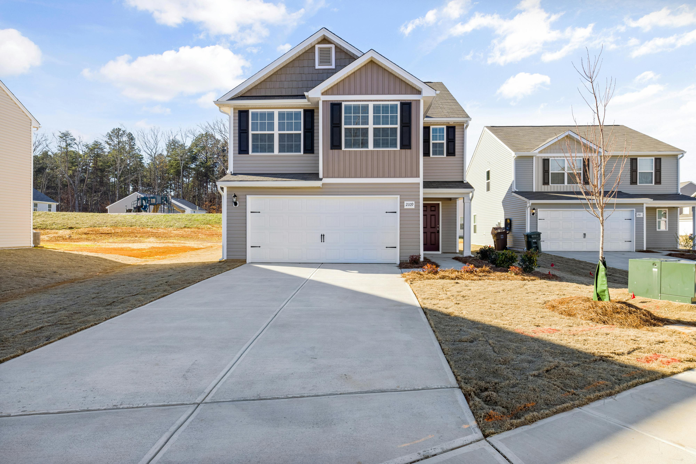
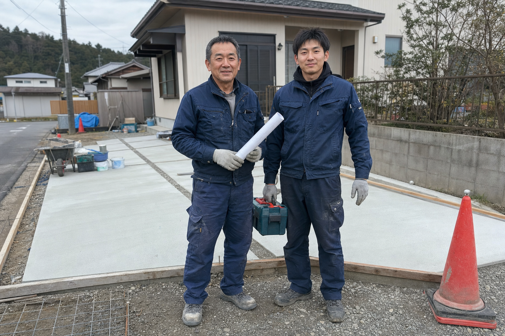
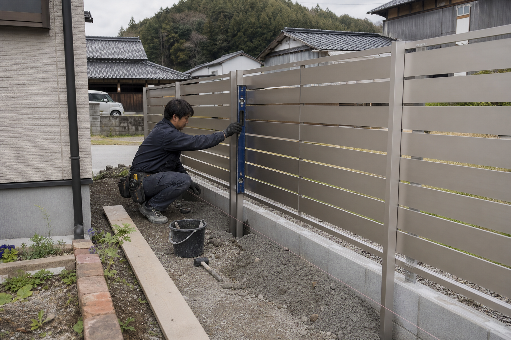
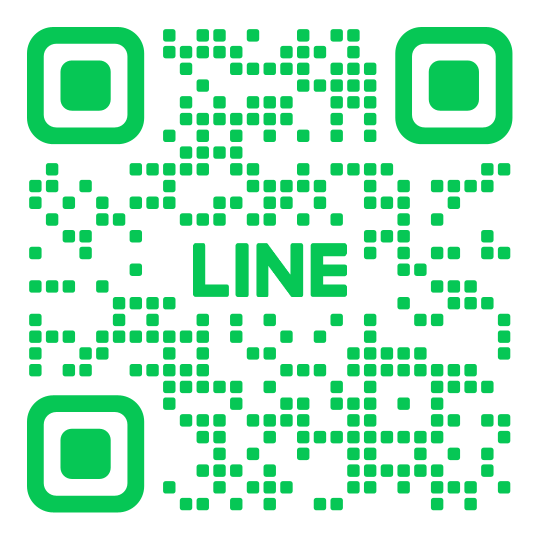

相手が検索しても情報が少ないと、問い合わせ前に不安を持たれます。
職人さん・施工店・一人親方向け
その仕事ぶり、
ちゃんと伝わるHPにしませんか。
LINEで送れる名刺代わりに。見積もり相談の前に安心してもらえる、職人さん・施工店向けのホームページを作ります。

サンプル公開中
KDYエクステリア
施工写真、料金目安、お客様の声、Googleマップ連携まで入った見本サイトです。
こんな機会、逃していませんか？
写真や事例がまとまっているだけで、仕上がりの安心感が変わります。
名刺、チラシ、紹介のあとにURLを送れると、家族相談にも使いやすくなります。



作れるもの
お借りした写真や強みをもとに、御社専用のホームページを作ります。
今HPがない方も大丈夫です。施工写真、仕事のこだわり、対応エリア、よくある相談を一緒に整理して、見込み客に伝わる形にします。
- 施工事例・Before/After
- 代表写真・職人紹介
- お客様の声・口コミ掲載
- 料金目安・対応エリア
- LINE相談・Googleマップ連携
- QR付き名刺デザイン
まずはサンプルだけ見てください。
「うちだったら、こんな見せ方ができるんだ」とイメージしてもらうためのサンプルサイトを用意しています。今HPがない方もお気軽にご相談ください。

LINEでサンプル確認・相談ができます。
友だち追加後、「サンプル希望」または「相談希望」と送ってください。
入口プラン
5万円〜
まずは1ページの名刺代わりHPから。今HPがない方向け。
おすすめセット
18万円〜28万円
HP + LINE導線 + QR付き名刺までまとめて整えます。
名刺オプション
1万円〜4万円
デザインのみ1万円。QR付き1.5万円〜2万円。現物100枚は2.5万円〜4万円。